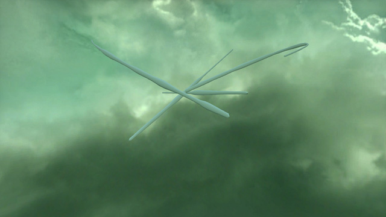

**Sonic Sculpting**
Michael Mara

A flock of sounds dancing in the sky.
This is the product page for Sonic Sculpting, an interactive application where you can create tangible sounds with your voice, and give them life to fly around with others. Check out the [source code on Github](https://github.com/Mx7f/sonic-sculpting)!
**User Manual**
- Press the space bar to begin creating a "sculpture" of sound, release the space bar to finish your creation. Your sound will take flight and orbit together with any other sculpture you have created.
- Press the number keys, '1' meaning the first sculpture you created, and so on, to play back the corresponding sculpture.
- Press 'Enter' to do something very interesting: play the sounds by sweeping a plane, acting as a playhead, across all the sculptures you see. This reveals the main conceit of the program: the sounds are embedded in 3-dimensional space, and can be resampled using geometric operations.
- Freeze/unfreeze movement with 'f'.
- Ctrl-S to save your soundscape
- Ctrl-L to load it back in
**Design**
The release version of Sonic Sculpting is very different than its original conception. The project began with the idea of "sculpting with your voice", after the I had excitedly played with the virtual-reality sculpting app [VR Clay](http://vrclay.com/). You can see the original design document [here](design.md.html). The idea was that you would place down sculpting material directly using a virtual mouth, right below the virtual camera. I developed an initial prototype, where the amount of material placed down was proportional to the loudness of the sound. The basic aesthetic still present in the release version was developed during this initial phase: the simple off-white tube-like structures formed from sound, and the beautiful sky chosen to fulfill my aesthetic preferences, but with no relation to the rest of the design.
It was after getting feedback on this initial prototype that I started to feel like the interaction was incomplete. There was the one-way "sculpting" audio into physical (virtual) form, but once it was sculpted there was no way to get back the sound. Upon a suggestion from Prof. Ge Wang, I decided to add the ability to play back the sound. I created the conceit that the audio waveform was now embedded inside the sculpture in 3-space. Now we can play back the sounds by sweeping a playhead 2-D surface across the sculptures. The initial modality I implemented was playing the sculptures using a plane sweeping from the camera. This was intriguing, and already led to some interesting results (you could play the sound backwards by positioning yourself directly behind it, or play the sound faster by looking at it from a diagonal (which shrinks the distance the plane travels between audio samples)).
This 2nd prototype was satisfying in that it created a two-way interaction: from sound to sculpture to sound. However there was a nagging feeling that the experience was lackluster. I realized this was simply that the initial conceit: sculpting by placing material with a virtual mouth, only vaguely worked in a virtual reality environment and was basically impossible in a standard graphical application. When we sculpt in real life, we use our hands, which are very dextrous, and can look at what we are doing from a third-person perspective: we watch our hands work. This application threw both of those out of the window, and, in a non-VR environment, also forced the "virtual head" movement to be again further removed from real-life; controlling a free-flight camera using keyboard+mouse or a game controller is much harder than controlling your head in real life. So we had three difference making sculpting much more challenging: one would have been perfect, two is pushing it, and three was doomed from the start.
So I went back to the drawing board, and tried to find the kernel of transcendance in the failed design. I determined it was the conceit of embedding sounds in 3-space that was driving me to develop this application. I still was enamored with that core idea, and decided to pivot on the design. Something that had bothered me throughout the prototyping phases was the static nature of the sculptures. I had though of making them pulsate, gyrate, anything to make them feel "alive." Ge again gave me some ideas, this time of turning the sounds into chinese dragons that would fly through the sky (this came as inspiration from the beautiful sky I kept in the application throughout the prototypes). When he first made the suggestion, a lightswitch went off in my head: this was how to keep the core aesthetic, but make it work in harmony with the rest of the application! I implemented this right away and made a host of aesthetic tweaks, the largest of which was making the "embedded-playback" use a plane-sweep from left-to-right instead of forwards, and the visualization of the sound created. This left-to-right nature mimics the playback of sounds in a normal sound playback app, just brought into 3-space. This felt far more natural rounded out the application, creating what you see today.